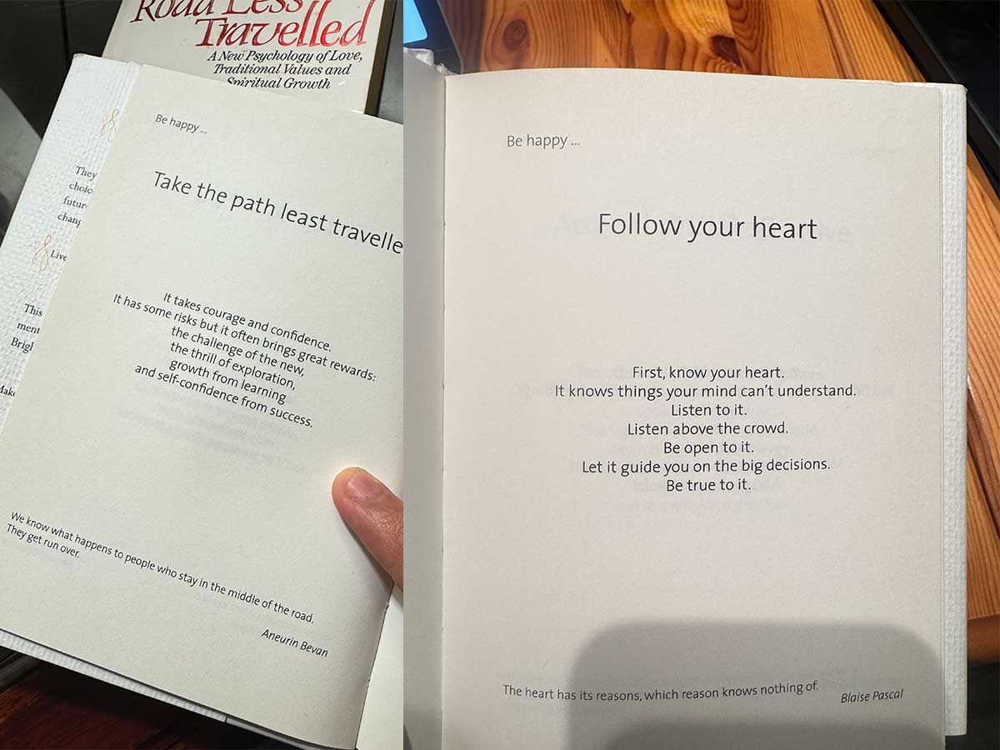
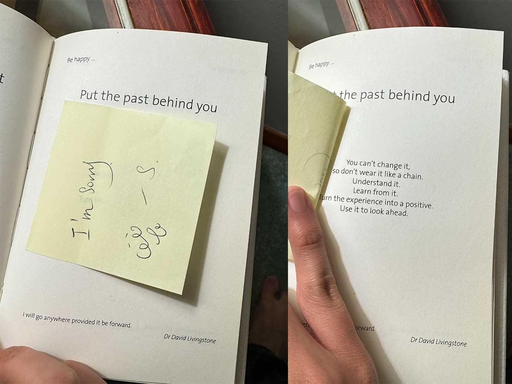
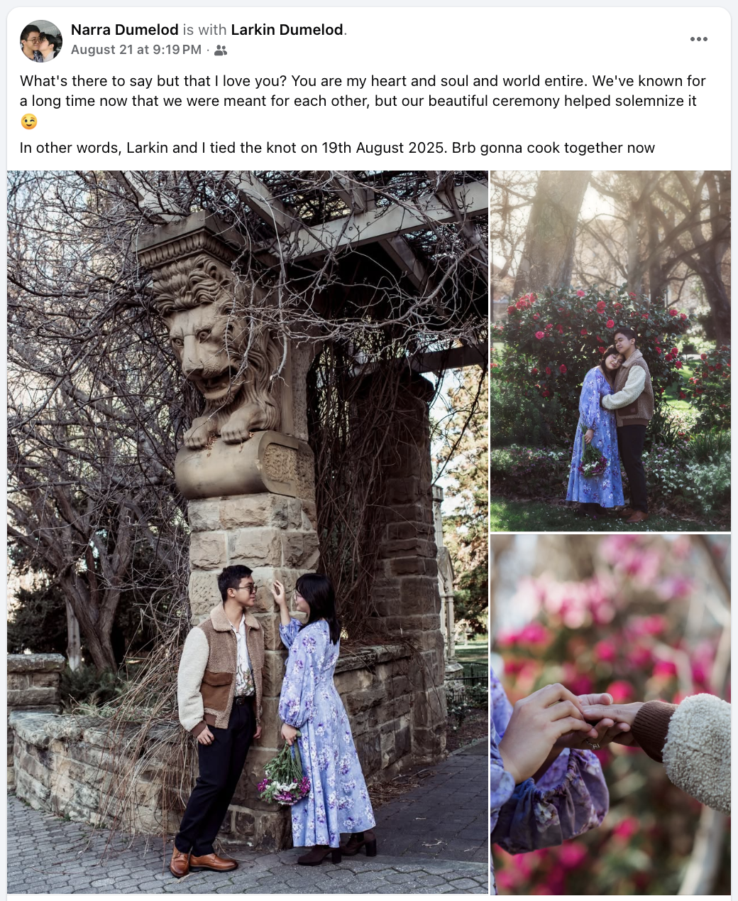

Last of the yule log to commemorate this Winter. I tried to write as much as I can here throughout the season, but I get too busy most of the time or I’m just not in the mood. When I do write, usually it’s when I have really strong emotions but that don’t happen as much lately. WARNING: long walls of text ahead.
This winter is when I made substantial progress with my ambitions. Nothing is still set in-stone, and I feel I’m still at risk of suddenly going home. But the experiences and learners I made during this season is so invaluable to me. So here they are:
Working with Petko
Last June, Petko had bought a catering company based in Crow’s Nest just right by North Sydney. It was a very modest company that wasn’t doing well financially. Petko had changed a lot with the business over the past weeks - mostly just aligning the processes into his own private chef business. Nevertheless, it gave me a more stable source of income with many new things I’ve learned about businesses (especially in Australia.)
I’m more of a “learn by seeing” type of person - even during college. I can’t just take theory as is, I have to witness and see it firsthand before I can really get a grasp of a certain concept.
The thing that makes me struggle to understand business is how exactly does it find customers?
When I first landed in Australia, I honestly didn’t know what to do. All I had was some extracurricular experience mostly in designing stuff, project management, executive work, and leadership (which honestly I need to work on.) I knew back then that these credentials mean nothing here. On-top of that, my visa had strict work restrictions which limited the jobs I can go to. I knew back then that I had to do blue-collar jobs to survive like working as a cleaner or fast food which didn’t made and had already accepted even before making the decision to go here.
My first job was a scam. Just one-month in since I first got in Sydney, I got an interview request for some guy running a “marketing agency.” Went-in, did some stuff, they liked my work and “took” me in.
The guy was some Vietnamese who has been scamming freelancers for years. His ploy is basically to sell digital marketing services (social media, websites, SEO, etc.) to small businesses around Australia promising growth and results. In reality, he just forces business to pay, hires some random people to do some “work,” pockets all of the money and doesn’t pay the people who work or do sales for him. In the end, both the business clients and the freelancers get scammed.
Anyway, this went on for three weeks. The result of this was that I was almost two months jobless in Australia. I was mad, of course; but most of all: I have heavily depressed. It was depressing enough to be unemployed in the Philippines - but in Australia? After all the sacrifices you made to get here?
It wasn’t for another month is when i finally got a job in McDonald’s. It took my three months before I finally was able to get income coming in.
As terrible the experience was, it taught me realize something - a business opportunity. While working there, I felt I can do other people’s job a lot better. What’s more, a literal scammer is able to sell a non-existent service to businesses.
I decided to try to do it on my own. I know how to design stuff (really good might I say. ((jk))) I didn’t know about the marketing stuff but I can just teach myself about it.
Anyway, I learned about websites. I learned about social media (which I eventually hated because there’s a reason why I hate being active in social media). I learned about Google. How to do ads. How to create campaigns. How to understand what it means to “market a business.”
Around the same time was the first time I met Petko in a business event in Sydney. Funnily enough, it was my first networking event and he was the first person I talked to. I was very shy back then and he kept on pushing me to talk to people (I can’t.) Anyway, funny how that interaction had changed over the years.
Petko eventually thought into this school I attended. I told him I want to do marketing (because I think my design skills are the only way I can get into business.) He also probably saw my efforts in trying to sell stuff to other people at that time, but he took me in eventually.
Drafted up this rough campaign plan which is sort of finicky especially for someone who knew nothing about businesses. Got in a call with him and his wife, Sukey, whom I met for the first time. Somehow they were impressed (especially Sukey) and admired what I was trying to do.
Anyway, the rest was history. I barely did much one-year working with them - mostly just focusing on other (admittedly less) clients. The freelance gig never really grew. This was primarily because I cannot sell myself. Even if I can, the market for digital marketing freelances is oversaturated. Anyone can do it and it’s not a difficult thing to get into. I cannot set myself a part. How do you tell a business-owner that you can give them X, when he/she had already heard that from 10 other people? There are creative ways of going about it, but I guess my personality is just not up for that stuff (Watch: “Guys with 'Entrepreneur' in their bio” by Trevor Wallace.)
Deep-down I also wanted to build something unique. Something new. Something I can be proud of. So, I guess I never really focused on it.
Going back, my biggest trouble in understanding in business is how it gets customers. Yes, I understand all the theory behind marketing. But it’s difficult for me to fathom without seeing it first in-person. I guess this is where my inexperience come into play. I simply don’t have the previous marketing experience to help me actually build something.
Working for the catering business and gaining access to Petko’s sales system made me understand this better.
I understood Marketing. I started seeing it in action. I started to see how theories are functioning in the real-world. I saw how marketing works, and how I am able to apply my previous skills in design and research to come up with effective campaigns. I started to think more broadly.
I like to think that people from a scientific background make great businessmen. I finished my Bachelors in the Life Sciences (Biology). Petko did a Bachelors in Ecology and Inorganic Chemistry. Like me, he also shifted to marketing and worked for an agency in Bulgaria I believe which eventually landed him a work opportunity in Australia.
Here’s a thing about business (at least starting or growing a business) which most people who have studied business don’t understand: it’s a real-world psychological & scientific experiment.
You come up with a hypothesis or an idea. You execute it and put it out in the market. You test the idea and see how the market reacts to it. You analyze data and react to it. People like your product - great, let’s scale it; what can we do better? They don’t like it - okay, get their feedback, how can we improve it?
Business is a cycle of designing experiments, collecting data, forming conclusions, and doing it all over again. It’s a discipline. What’s good about a science major doing business is that you actually make money - potentially lots of it.
I do not see any value studying business or management. I have this deep bias against people who were studying management back in university. Though I admit - it’s mostly because they’re rich, privileged, and insufferable people who are very hard to deal with.
My degree then had this “management track” which I took. I attended some courses in the School of Management and I absolutely hated it. Not all, I took an accounting course and I honestly found it interesting. But the professors were insufferable and a bit arrogant. I once had one guy who boasted how he had been in all continents around the world (yes, including Antartica.)
The thing I hated about studying business is most of the lessons you learn in the real-world. There was absolutely no value in me studying what and organizational chart means - what each people in a corporate job do, or whatever.
Anyway, this scientific way of doing business is how you create a successful startup. Lots of business people don’t actually understand this. It’s how Petko was able to build his business to be sustainable. His unique approach is what making him money and stand out against the crowd.
Starting a Startup
I want to talk about this more since it has gained significant progress throughout winter. I think I mentioned this last May, but I’m trying to start my own Startup company.
I think it was around last November 2024 where I decided to test it out. I had this idea for a software tool which in my head; no one is doing, makes sense, and I personally see value for myself.
Take note of the word, “test.” An idea is just an idea, but you are unsure if it will work. This is why a lot of programmers trying to sell a business fail. They spend hours and days building something only to fail because the market didn’t see any value in it.
So how do you test a startup idea? My hypothesis is the idea itself, but will people share the same sentiments as me? This is where you start to experiment - to test. To test an idea out, you have to put something out there and see how people react to it.
Last November to December, I settled for a name, bought a domain, built and designed a brand, and started a website.
I launched the website towards the end of December. I don’t have any programming or software-building experience. To test the idea, I used my skills in design and animation to communicate what my app was trying to do. Put in the website then wait.
How do you market a website? Well, there are many ways. The most common and my most favorite is termed as SEO or “Search Engine Optimization” which is a fancy way of saying: make your site visible through Google. If you need a locksmith or need to look for a restaurant nearby, who do you ask first? Google. It’s a good way to market something because it’s free - but you need to know how to do it properly.
Anyway, I mostly just applied the stuff I learned through Petko about how he did his. The website is very simple. I used WordPress CMS + the Elementor Plugin for design. I chose this because it is the tool I am most familiar with and Petko’s entire business relies heavily on WordPress.
Other methods to market can be through social media, or paying for it. SEO is slow and needs time to become viable. So I initially invested $100 to help gain sign-ups by setting up ads in Facebook and Instagram.
This is where data and analytics come-in. How do you prove that people will want you product? Simple: sign-ups. I advertised “Join the Waitlist” and tracked whoever submitted their information.
Funnily enough, my very first sign-up came a few days after I launched the site. It was some person from Israel who signed-up through Google SEO. I did the $100 paid advertising method, and got at least six more.
Admittedly, I didn’t know what to do after that. I garnered 8 sign-ups until January 8, then another on February 7. No more after that. The SEO wasn’t quite up to the standards I liked, but I was quite lost in the project so I stopped thinking about it that much. I was also preoccupied with other things during this time.
My issue here was I’ve proven that people liked the idea enough to sign-up. But there are more questions you need to answer and add to your experiment. Theses are: “Will people find the app useful?” and “Are people willing to pay for it?” To do both of these things, you need an actual product. My product, however, are just a bunch of GIFs, pictures, and videos in the website. There is no actual product which people can get hands on - and I can’t build an app because I don’t have the skills. So in-short, I just can’t do it anymore.
Last May, I met Luke in a UTS Startups event. Luke had just recently graduated software engineering in the University of Sydney. He also had a Canva Internship. When we met, he was doing this dropshipping business selling kitchen appliances. It didn’t make sense because he was selling it for much higher than what you can find in stores like Officeworks or JB Hi-Fi. He said that he was only breaking-even. We initially offered to each other to have a meeting to provide insights about his dropshipping business’ marketing and him to give me insights about how to build the app for my startup.
Anyway, told him his doesn’t make sense simply due to the pricing. He agrees and he looks like he’s not too serious about kitchen appliances anyway. For me, he told me he’ll try to dip his hand into it using AI. He seems very interested and shares the same sentiments I have with the idea: that no one else is doing it, and there’s actual market value that we can tap on.
I asked Luke what he wanted in life and why he’s doing dropshipping and selling an electric flosser (another business he’s working on.) He said he wants to build something himself. His parents are a bunch of bankers and he said, “okay so that’s it? That’s life?” I think I resonated really well with him. What about the road less travelled?
So we met more the following days just following-up with each other. He showed me what he was able to build and he’s slowly starting to get more serious on it. Anyway eventually what was initially “Yeah, I don’t think I can build the app for you” turned into “Okay, I’ll be your co-founder.”
After this, I saw an opportunity. I went back to the website and starting improving the SEO. Luke also invested another $100 for paid advertising. It was May 13 where I got another sign-up. I worked on the site more, and right now, we managed to get at least 24 more sign-ups totaling to 34. It’s still not a lot, having organic search account for more than half of those sign-ups, it’s a good sign.
Luke continued building. He had to stop for a month because he had to go to the UK which was perfect for me because it was during the time Petko and I started working on the catering business and I needed to dedicated lots of time into it. Luke came back just last month and we continued working. Another month in, Luke had just recently finished a useable prototype. I played around with it and I was honestly really impressed. It’s buggy, but useable - I finally got a product in my hand to answer the questions I wasn’t able to ask last January. Tomorrow, we’ll meet at UTS again to design an experiment to finally answer the question: “Will people find it useful?” and “Are people willing to pay for it?”
What’s pushing me in really doing this is of course, I really believe in the idea. I’ve talked to some people who signed-up for the app, and they really like it. Recently, this person who signed-up last November through Google messaged me in Facebook. He asked when the app is starting because he really liked the idea. I don’t know, I feel like I might have something here.
Other than that I also feel like the brand I built is quite personal to me. It was quite short-sighted and stupid for me to do so last November, but I really love what I had made, it’s beautiful. And I really want it to become something. (The crashout scene by the guy in the Chinese film “Us and Them” (2018) comes into mind.)
Anyway, lots of work needs to be done in the coming months. Luke and I will need to get the product into the customer’s hand, get feedback, and continue improving the app.
We’re adding some sort of feature where people will buy. If someone does buy, then it’s final. We got an idea. What’s more, we got a startup and we’re officially tech founders.
The prospect of being a founder honestly scares me. I was in this party last July, I was talking to some people about what I’m doing and the guy said, “oh, so you’re a tech founder!” I’m like, no not really. I’m not making money from it. And he now remembers me as the “tech founder” guy.
What scares me more I guess is the prospect of having the “CEO” title underneath me. A CEO of a tech company that’s actually making money. I guess the responsibility just scares me, like I make decisions about how this business that’s making money grow. Yeah, some people would kill for the title as much as they boast about having “PhD,” “Msc,” or “MBA” after their name. But I don’t have that kind of ego.
What I am looking forward to though is, if this works; it’s a significant step closer to my dream. If this makes money, I can apply for the 858 National Innovation Visa which will help me get permanent residency in Australia. Get citizenship a year after. And finally, travel the world while doing so. It may give me money to live my life peacefully. To finally have my own apartment, no longer worry about my future, give back to my mom, travel to Europe, and many others. Sell the startup for $100 million. Buy a house. Probably also buy a cafe shop in the Eastern Suburbs and the Northern Beaches; and then finally: be depressed because I don’t know what’s next in-life anymore.
All of those sounds promising, but it relies heavily on a a lot of hypotheticals right now. I won’t be betting all my cards on it, but I guess it’s nice to have a dream; to have an ambition. Let’s see where this goes.
Mistakes, Discipline, and Perseverance.
This one’s about making mistakes.
In the catering company, there used to be two chefs working together: Chef Leo and Chef Patrick. Chef Leo was very professional and cooks really good. Chef Patrick cooks really well too, but how he works is a bit not too business-oriented.
Chef Patrick has this “just do the job” mentality. You come up, do the job, and done. Doesn’t matter if you what the quality is or if you’re doing it right.
There was some trouble between him, Chef Leo, and Petko - mostly with regards to one client we inherited who pays like $210,000 annually. I’m not sure what happened exactly but they were losing clients and Chef Patrick was to blame so he booted him.
Chef Leo kept him for longer until he messed up another delivery because he put in the wrong address. Petko had enough and said either he’s purposely losing us clients or just retarded.
I asked Petko what had happened and he said he just made so much mistakes and doesn’t really ask questions or seek help/feedback. He said that he’s usually very lenient with people who make mistakes, but it just went to another level.
I also made mistakes. There was one week where I was really busy, and so was the kitchen. I had missed an order—costed us $800. I also messed up the timing for an order on that week: the client was expecting it two hours earlier than I indicated.
It was a bad week for me honestly. I maybe even got a bit depressed. I know that I will learn from it and I’ll bounce back: after all, mistakes is what makes us grow. I guess it was just something natural I had to go through. Petko understands this and is very lenient with mistakes (Chef Patrick was the only instance where he gave up because maybe he just never changed/learned from his mistakes). Anyway, after just one or two days, I was able to bounce back and get on my feet again, then move-on.
Maybe what I learned here is simply discipline and perseverance. Maybe on that week I was too distracted thinking about other things. My mental state is a mess right now there’s just so many things to think about. I learned to just have the discipline to manage my time and my mental state. One thing I know for sure is that the most successful and happiest people, are the ones with a high enough emotional intelligence. I’m not sure I’m quite there yet.
But such is life, huh :)
The Road Less Travelled.
I got myself reading Scott Peck’s book named “The Road Less Travelled” which I talked about a lot a few months ago. I was able to buy a second-hand copy of it from a small humble bookstore in rural Victoria.
There’s also a bookshelf here which is a mix of chef books, self-help books, business books, and some kids book. I picked-up this book entitled “Be Happy: 170 Ways to Transform your Day.” by Patrick Lindsay. I like this book. Here are some entires which I love:

The best things in life are born out of courage.

This has a note which I presume is from Sukey. I wonder who she hurt.
Going trough these, I guess all these mistakes, problems, and issues I had is a necessity: it’s what makes me grow and nurtures my spirit.
I always tell people to be open in making mistakes. It’s normal. What’s more important to learn from your mistakes.
Do I learn from my mistakes? In business and work, maybe. I need to because making mistakes, learning, and bouncing-back is what make excellent entrepreneurs.
But how about in my personal life? My relationships with people? I don’t know. I’m not the type to quantify my relationships. Some have a really good feeling, some are bad feeling. I feel to my mom about this: it’s not always a good feeling, but I love her because she chose me above anything else. I believe that loving is the most stupid decision a person can make in their life, but that’s what make it so special. People don’t have to love, but they chose to.
With that, do we learn from our mistakes in relationships? Wont doing so means quantifying it? Fuck, I don’t know.
Family.
My mom called a few minutes ago. I was too busy working and I wasn’t able to give her much attention. But it was a though day for her. Landlord is playing with the idea of increasing the rent. She said she was too scared with asking more money from my dad because she doesn’t want to be a burden to him anymore and that just put pressure on him. The dryer broke and she had to carry wet and heavy clothes to the dryer shop, and some other things that are broken in the kitchen because of some recent floods.
I guess she just cried about how tough life is there. I know exactly how it felt: to be a burden and to feel like there’s no hope with anything. I know that I should be the one to comfort her, but I honestly didn’t know what to say. Moreover, I was so stressed and half-asleep at that time because I had been awake for at least 18-hours already.
I feel that sometimes, I just don’t know how to connect with people. Like, I just freeze and don’t know what to say. I guess it’s just an issue with me.
I don’t find words soothing. Some people was to be comforted by being assured; by saying the right words that they exactly wanted to hear. The issue I see with myself is that to make someone feel something, I need to make sure I know what exactly that feeling is. Unfortunately, people in the past made too many empty promises to me - words have had no meaning.
My mom said things will get better - it didn’t. I had to suck up most of the bullshit. Friends say we’ll meet again one-day - we didn’t. Someone I liked promises we’ll go out one day - we didn’t. I guess I often felt neglected. I realized then that words are very easy to say. I distrust people heavily because of this.
Maybe that’s why when I express love, it is not through words - but action. I moved to Australia because I had enough of what my mom is experiencing right now and I want to build a better life for her. I’m dong all these things right now because I know that when I love in the future, I will be able to provide something - not just empty words with no inherent meaning behind them.
But will I ever get to that point? Deep-down I feel like I’m really cursed to not being able to truly express the love I have inside me. It’s another family thing - my parents cheated to have me. My mom’s parents cheated to have her. My mom looks like she might end up unmarried for life. My cousins somehow keep on cycling with having relationships with different men, or end-up having soulless relationships. I just noticed right now that one of them had deleted her photos of her previous boyfriend.
Anyway, I don’t think that healthy relationship thing is just meant for me - especially with my recent experiences. I had a block mate during college named Narra. She graduated from the most prestigious high school in the Philippines (Philippine Science High School). She’s very smart. She consistently get perfect grades each Semester (until it was ruined by one of our horrible biology professors.) What’s admirable about her is she doesn’t care about putting-on a performance. She literally cut her hair really short one-day simply because she found long-hair annoying. She wasn’t performing for anyone or looking for anyone. She minds her own business and just loves. She now studies here in Australia in Hobart, Tasmania.

I suddenly understood her personality recently. She had a boyfriend since high school. Recently I think they just had engaged? She changed her surname in Facebook. The guy had just graduated from the University of the Philippines last July. Lately, they are together down in Hobart. They posted a picture together in one of the gardens there, a ring, and flowers announcing their engagement.
I guess deep-down that’s just what I wanted. Knowing you are loved so much that you don’t worry about performing for other people. That you are loved so much that you can focus solely on your studies and your ambition because you are inspired by someone. To know that you are loved so much that the distance between Australia and the Philippines doesn’t matter; you trust, you carry each other’s ambitions, and build on a future where you live together, cook for one another, and just exist and have the world for each other. I remember feeling this yearning when I first met Sukey and Petko in their apartment. They just understood each other and just lived in that small space - sharing their life for each other.
Unfortunately, I think my fate had already been decided the moment I was born: I’m just not meant for that. All I can do now is to just enjoy that feeling in my imagination.
That wraps it up for Winter. Thank you for healing a part of me. This wraps up the yule log.